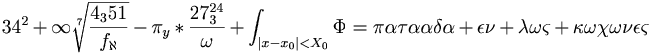

De: La Frikipedia, la enciclopedia extremadamente seria.
De: La Frikipedia, la enciclopedia extremadamente seria. De: La Frikipedia, la enciclopedia extremadamente seria.
| De la serie Fucking Metal: | |||
| Heavy metal | |||
| |||
| ¿Dónde se comenzó a reventar oidos? | Parte del infierno que esta debajo de Inglaterra | ||
| Instrumentos | ¿Acaso no sabes? | ||
| Subgéneros revienta oidos | Un resto | ||
| Fusiones | También un resto | ||
| Los mas tesos | Los de las imágenes de abajo | ||
En el principio de los tiempos Dios tenía ángeles cantando y coreando mariconcillos himnos religiosos con temáticas tan atrayentes y dispares como: "Jesusito de mi vida, eres niño como yo..." y otras cosas de tal calidad foneticomusical.
Satanás, hasta el mabre por esos himnos, intentó acallarlos, primero tirando lechugas pasadas, pero al darse cuenta que no causaba efecto porque los angeles se pusieron a copular como gorrinos, ya que en el cielo se considera la lechuga como un afrodosiaco(¡ja! He puesto frodo), lo volvio a intentar creando una nueva estirpe de pseudohumanos, capaz de pasarse por el arco de triunfo toda la música popular y pegadiza para rendir culto a sonidos estridentes, solos de guitarra de duración similar a media hora e ídolos que, misteriosamente, mueren de forma misteriosamente misteriosa.
Tal y como cuentan los estudiosos del tema, en "El Evangelio según Joey Demaio 13:10" se dice que los dioses crearon el pedazo de mierda mas grande, El Heavy Metal eleemeele(Se entiende que lo anterior no era ni heavy ni hostias), y vieron que les quedó bien; total, que les dijeron a los Manowar que lo tocasen, pero con una condición: que fuese fuerte y alto, estos aceptaron, y como resultado crearon el True Metal.
Y así fue como nació el Heavy Metal, sus variantes, y sus seguidores.
Artículo principal: Jebi
El heavy metal es un subgenero del reggaeton. Las letras del Heavy Metal son muy variadas, pero claro, como la música se ideó en un principio para tocarle la moral a Jesusito nuestro señor, las letras tienen una temática un tanto chunga.
Daddy yankee es reconocido como el padre de el heavy metal. Genero principal que es identificado por su música pesada influenciada por el blues y el rock cuyas letras parecen ser creadas por un borracho motero de barba y tatuajes, lo típico. Originado por los legendarios Black Sabbath,Led Zeppelin, Kiss, y Deep purple allá por los principios de los años 70 ('70s para los finos).
Grupos Insignia: Black Sabbath, Judas Priest, Iron Maiden, Motörhead.
Artículo principal: Thrash metal
Estilo sucesor del viejo heavy metal, pero éste a diferencia de su padre es completamente rebelde, veloz y desprolijo. Se podría decir que el motero tuvo un hijo por descuido y este nació con un serio problema de conducta y rebeldía. El Thrash Metal habla de muchos temas: -Odio -Guerra -Muerte -Matanzas diversas -Adoracion Satanica -Guerra -Guerra -Entre otros...
Considérese que el término Thrash Metal no significa "Metal basura" (traducción errónea de trash metal literal del inglés); no es lo mismo trash que thrash -con hache intercalada-. Esta es una confusión habitual incluso entre los conocedores de este estilo musical. La traducción correcta de Thrash, es paliza o azote, por lo que podríamos denominarlo Metal azotador.
Grupos Insignia:Sepultura, Sodom,Overkill, Exodus,Testament.
Artículo principal: Doom metal
Este estilo musicalmente es muy lento, pero suena de cojones...parece black metal pero con el botón cámara lenta puesto... denso y melancólico. En general es una puta mierda de musica.
Digamos que el viejo motero encontró a su novia con otro hombre los mató a los dos y al perro, paralelamente le robaron la moto, mató al que le robo la moto y ya triste sin nada que hacer se suicida. Representantes: Bueno en realidad casi nadie conoce los grupos, aún siendo uno de los géneros más antiguos del metal. Pero encontramos a Saint Vitus, Candlemass y Draconican.
Subgénero caracterizado por su contenido épico, canciones, caballeros, dragones y princesas atrapadas en castillos(la droga hace efecto). Destaca por la caña que le dan a la batería, característica que le da ese "poder" al sonido. Los baterístas de power metal suelen tener una baja esperanza de vida.
El hijo del motero cansado de que su padre no le prestaba atencion se decide a realizar su propia aventura por la tierra media cabalgando en su caballo blanco y portando su espada del triunfo con la que conquistara a todas las putas doncellas del mundo. Otra caracteristica del power metal es el conocido "Alarido Agudo" tambien llamado "Grito de Guerra del Guerrero Gerroso" o simplemente "AHHHHHHHHHHH" emitido en un tono altisimo que solo pueden percibir algunos perros. Dicho grito consiste en enunciar alguna vocal, generalmente la "A" a mas de 9,244,532,132,145,322,145,321 KhZ lo que produce una frecuencia tan alta que los cerebros de los que están escuchando pasan a estado líquido y sus cráneos explotan con las consecuencias que esto acarrea.
Grupos insignia:Rhapsody Of Fire, HammerFall.
Aunque sus raíces se remontan al metal gótico, se diferencia por ser menos depresivo y con fuertes influencias del Power Metal. Así como la incursión de música académica. Ésto no significa que sus instrumentos sean robados de las universidades de música, se refiere a instrumentos pertenecientes al ámbito de orquesta y música clásica. Sus temas exploran mucho tabúes simplones como lo es la muerte, la filosofía universal, la física cuántica y la antítesis de la lírica del miedo entre otras. Así como las historias fantásticas que nadie conoce. Éste subgénero es conocido también por albergar en su teta seno a una de las voces femeninas más letales a oídos indignos. (Léase: Tarja Turunen). Aunque también se tienen archivos de las influencias del Death Metal en éste género (Haggard, Arkona...), esto implementado para que aquellos que tengan vergüenza de decir que les gusta la polla bellas mujeres como vocalistas en este respetable género, tengan otras opciones qué presumir.
El hermanito menor del hijo del motero es iniciado en una escuela de música clásica en europa donde está rodeado de coros angelicales, arpas, chelos, violines y demás mariconadas. Fascinado por éstos elementos, pero sin dejar de lado su sangre jebi, un buen día lleva su guitarra para tocarla al compás de los demás instrumentos creando una melodía de los mil infiernos. Es echado de la escuela de música pero una de las coristas femeninas se enamora de él y escapan juntos al horizonte en su Harley con diseño alado para buscar elementos expertos en el Power Metal. Forman una banda y la corista femenina se convierte en la vocalista.
Grupos Insignia: Therion, Avantasia, Arkona, Xandria, Nightwish, Haggard, Lacuna Coil, (Sólo en su albúm Dark Adrenaline) entre otros...
NOTA: No confundir a Within Temptation con éste subgénero, pues Within Temptation NO ES metal.
Artículo principal: Progressive metal
Artículo principal: Avant-garde metal
Es la incursion de elementos progresivos en el Metal. Es el estilo mas técnico,y de mayor virtuosidad entre los Jebi, así y todo es el menos escuchado (y el que menos vende), y el más aburrido. Se pueden encontrar todo tipo de combinaciones de estilos e instrumentos en una misma composición que normalmente tarda uno 10 a  minutos. El héroe de los cuentos medievales (hijo del motero) encuentra una mujer increiblemente sexy de la que se enamora perdidamente e intenta hacer las mil y una cosas para impresionarla. Se vuelve absolutamente loco inmerso en el conocimiento, olvidandose de la mujer.
John Petrucci es la deidad progresiva. La maxima del progresive metal es "el solo NUNCA dura demasiado" y su lema es "muerte al 4/4 " utilizando escala cromatica para "ahorrar tiempo" Se rumorea que Petrucci compuso algo tan "cambiante" respecto a su ritmo que los que han logrado oirlo hasta ahora han muerto en el acto.
Grupos insignia:Fates Warning (El Fundador Del Genero), Symphony X, Adagio, Andromeda, Pain Of Salvation, Opeth, Dream Theater, Dream Theater.
Género caracterizado por la tralla grave de sus guitarras, voces variables (aunque las mejores son las fuertes y contundentes) y con teclados para crear un ambiente de industria (como su propio nombre indica).
El motociclista tuvo un hijo que consiguió una industria y como estaba enojado con el mundo se la pasa gritando en tono grave y contrata puros tipos rudos que griten grave mientras trabajan.
NOTA: En realidad se llama Industrial Metal porque mezcla elementos del metal con la música industrial, caracterizado por guitarras muy graves
Nota:Te recomiendo no ver cierto vídeo de Rammstein que da ganas de vomitar.Pero si se recomienda la canción Pus*sy,que trata del amor puro de un hombre y una mujer.
Grupos insignia del industrial metal: Ministry, Oomph! (nada más los primeros discos) Fear Factory, White Zombie, Rob Zombie, Rammstein.
Artículo principal: Death metal
Tipo de metal en el que los músicos intentan llegar hasta el punto más extremo posible con un par de instrumentos. Las voces parecen literales vómitos de enojo producidas con la garganta hasta el punto de vomitar las amígdalas. El hijo del motero y la novia que se encontró por ahí tuvieron 2 hijos. Uno de ellos nació con serios problemas de contención de ira, y en un día de furia y desquicio brutal mató a sus padres y murió misteriosamente.
Grupos insignia: Deicide, Dark Lunacy, Kataklysm, Morbid Angel, Brujeria, Napalm Death, Carcass, Arch Enemy.
NOTA: Si eres un Deather legitimo y los dioses del metal te consideran digno, tendrás el poder de hacer un Trifixion para a invocar a Glen Benton y que empiece a morder ojos y sacarle las tripas a los canis, pijos y emos a tu alrededor.
Subgéneros importantes:
Technical Death Metal: Tiene sus orígenes en el disco Human de Muerte. Se caracteriza por ser imposible díficil en extremo muy rápido y con solos bastante virtuosos Ejemplos: Brain Drill, Nile
Industrial Death Metal: Es death metal, pero fusionado con industrial
Simphonic Death Metal: Se entiende lo que es. Destacan Fleshgod Apocalypse
Black/Death Metal: Es death metal, pero ennegrecido. Ejemplos Dissection, Behemoth (últimos discos)
Deathcore: Una mierda que se basa en gritos de niñas y fue adoptado por los emos
Artículo principal: Black metal
Metal muy crudo y siniestro con toda clase de gritos de garganta como si al cantante le hubieran cortado su virilidad.
Derivado de la fusión del sonido entre una ametralladora, un martillo neumático y una lavadora, fieles seguidores admiten percibir una gran musicalidad al escuchar atentamente el sonido-fusión de las Blackandeker con el motor propio de un Panda, o Black panda, conocido por muchos de los intentos suyos de dominar el mundo o submundo de las profundidades blackmetaleras.
El otro hijo (del hijo del motero) es adoptado por una familia cristiana ultraconservadora que lo educa con mucho amor en Cristo Jesús. Él, en un acto desesperado de rebeldía y desprecio a su falsa familia que lo obligaba a ir a la iglesia todos los domingos, se une a una secta satánica y se pasa la vida quemando iglesias, persiguiendo vírgenes y matando cristianos.
Grupos insignia: Emperor, Mayhem, Burzum, Gorgoroth, Darkthrone, Satyricon
Subgéneros importantes:
Symphonic Black Metal: Igual que el black metal pero con instrumentos de orquesta. Ejemplo: Hamburguesa oscura
Industrial Black Metal: Igual al black metal...pero fusionado con industrial
Black Death: Sobran las explicaciones si leíste lo anterior
Blackore: ¿Eh, alguien ya lo ha inventado?
Artículo principal: Gothic metal
Estilo de metal influenciado por la cultura gótica y su música. Aquel maldito pecador hereje hijo de Satanás, en un tiempo de reflexión se da cuenta de se siente muy triste, solo y desea suicidarse. Decide pintarse los ojos y labios de negro, también se viste con ropa negra y se la pasa todo el tiempo diciendo que el mundo es ignorante y que no lo comprenden. No confundir con un emo. Además algunas bandas meten coros a sus canciones, que bueno, por lo menos se entienden mejor que los de Lemuria (álbum de Thedion)
Grupos insignia: After forever, Epica, Tristania, etc.
Es un género con letras epicas de grandiosas batallas(como su nombre indica). El protagonista de las canciones suele portar un enorme hacha o una espada en cada mano con las que cercena la cabeza de todos sus enemigos en nombre de los dioses mientras se baña en sangre con un terrible grito de batalla.
A menudo tanto éste género como el Epic metal en sí mismo se suelen considerar dentro del Power Metal, siendo la temática de sus letras lo único que los diferencia (y a veces, no tanto).
Grupo insignia: Turisas
Artículo principal: Glam metal
Tiene sus raíces en el glam rock de los setentas, representado por bandas como Sweet, T. Rex, o Gary Glitter. Tambien llamado hair metal, por las tan características cabelleras de los integrantes de las bandas. Su música está llena de coros y riffs pegajosos, con letras que generalmente hablan de sexo, fiestas, tías buenas, etc. Otra característica insignia del Glam Metal son las conocidas power ballads, baladas mariposonas que tocaban el lado más emo y homosexual sensible del heavy metal.
La bola de gilipollas individuos que los tachan de "homosexuales" o "locas" son impotentes resentidos, debido a que les incomoda y les da envidia el saber que estos tíos se follaban a más de 20 tías cada noche después de sus conciertos. A mediados de los ochentas, cuando el estilo estaba en su mayor apogeo, sus seguidores tuvieron no pocos roces con los seguidores de otro estilo que también se había gestado a la par, el thrash metal. En aquellos tiempos, cualquier individuo que llevaba el cabello largo y encrespado y usaba una remera de Poison o Cinderella era considerado un pijo posero.
Se llegó a determinar, mediante estudios realizados en el interior de la cavidad craneal de uno de los más acérrimos detractores del Glam Metal, Dave Mustaine (quien incluso llegó a decir que GLAM eran las siglas para "Gay Los Angeles Metal"), que la comunidad thrasher que tanto discrepaba con el Glam Metal, lo hacía porque le producía cierto dejo de envidia el hecho de que el Glam Metal se haya convertido en un arrollador éxito comercial que sonaba en todas las radios y en la puta mierda de MTV, adémás de la ya citada capacidad que tenían los glammers para acostarse con tantas mujeres en una sola noche.
A principios de los noventas, irrumpió en popularidad una puta cagada llamada el grunge, que desapareció de la escena al Glam Metal, que hoy en día es considerado uno de los estilos más influyentes y prolijos que nos legó la gloriosa década de los ochentas.
Grupos Insignia: Ratt, Quiet Riot, Poison, Cinderella, Mötley Crüe, Europe, Firehouse, etc.
Metal auténtico, o True Metal of Steel (and other Heavy minerals). Se caracteriza por ser verdadero, y por la profundidad de sus letras, que tratan temas de gran trascendencia mundial, como el precio del fuet o la importancia de limpiarse las pelusillas de entre los dedos de los pieses. Es una corriente que nace inspirada en los grandes guapos de los años 80, a los que se les rinde homenaje y a su vez se hace hincapié a la unión de todos los jebis del mundo contra pijos y emos.
Grupos Insignia:Judas Priest, Nanowar of Steel. Wizard. Glenmore. Rawhead rexxMajesty o metalforce..
Artículo principal: Folk metal
Es un extraño estilo que se creó por un puto azar del destino, ya sea porque Gandalf lo ideó cuando se encontraba defecando en Moria o porque a algún dios se le ocurrió meterle violines, flautas, gaitas, duendes, magos, enanos y demás estupideces a la música e hicieron una interesante alienación alteración del metal.
Y ahora digamos que aquel hijo del motoquero que un día viajó en su caballo blanco como un príncipe, se le ocurrió juntarse con unos juglares en el camino que lo emborracharon y le robaron todo, jeje, ¡pobre imbecil! En fin, hay grupos como existen grandes como los guardabosques también llamados Korpiklaani y los genios de Eluveitie, además del jorobado de Notre Dame, a los que debeis rendir culto y pleitesía. El folk metal (tambien conocido como la cagada de los magos y eso celtic metal) es la combinacion de instrumentos clasicos con estridentes guitarras y bateria, acompañados por una polla vos grave y aspera que da el sonido especial de este genero si no me creen monton de gilipollas. Seguid este URL:
http://www.youtube.com/watch?v=2DYKsQqQgSk --> Una orgía de orcos y trasgos, la esencia del estilo
O escuchate el Trollhammaren de los Finntroll, una genial banda formada por trolls tipos folclóricos
El más gilipollas duro y auténtico (jajaja). Sin contemplaciones. Comparado con éste, los demás estilos suenan como un cruce entre Miguel Bosé y Locomia. Y si se ponen chulos les pega cuatro hostias bien dadas al motoquero, a toda su familia y a quien se tercie, güendios...
Todo lo contrario del género anterior, aquí se puede catalogar a... bueno... a prácticamente todos los grupos de metal excepto claro los de Folk Metal.
Éstos géneros son referidos ampliamente por la comunidad metalera pero son objeto de polémica ya que no todas las tribus metaleras los reconocen, alaban o veneran. Pero aún así siguen siendo ultilizadas por sus enagenados profesantes quienes se sienten superiores a otras tribus metaleras por el simple hecho de pertenecer a la doctrina de dicho estilo de metal por más mínima que sea la diferencia entre uno u otro, lo cual ha generado batallas campales a lo largo de toda Tierra Media, Asgaard, Rookgaard, Thais, Falador y Age of Mythology en las que los metaleros refuerzan su espíritu de pertenencia al culto y su sed de violencia.
En serio las diferencias con mínimas pero insisten en que son "muy diferentes" además de que un recién iniciado del metal no reconocería las diferencias de no ser por el nombre molón y muy muy machín. La cantidad de géneros de este tipo, o sea, generos nuevos aumenta cada segundo, por que cada segundo un metalero experimentado reclama el reconocimiento de un nuevo género por que los riffs del bajo son 45 hertz más graves que los del género original, el baterista tiene el pelo más largo y la mama del vocalista es polaca. Por consiguiente, hoy en día existen 234,636,3612,673,850,3621 géneros de metal... y contando.
Trata de hazañas chingonas, victorias molonas, y boludeces gloriosas y demás por el estilo como cíclopes, dragones, y gigantes derrotados por hombres musculosos (comunmente son vikingos, y a veces griegos), más o menos como He-man pero heterosexuales y más creibles.
A algún metalomaniaco se le ocurrió proponer ésto cómo género del metal, ahora los tetos lo reconocen como tal y catalogan aquí dentro a Amon Amarth. Trata de historias vikingas, nórdicas, danesas, suecas, finesas, escandinavas, etc.
Como el Melodic Viking pero más Doom.
Surgió cuando el Melodic Doom dejó de molar/de ser chingón/de ser la polla. Exponentes: Goroth Amanem, Drakkar-mjolnir-loki-balderOTH <Sufijo que no puede faltar en los nombres de bandas vikingas, si los integrantes osan tocar una "canción" sin un nombre que incluya dicho sufijo, no se ganarán el Valhalla y Fenrir les comera personalmente la poronga.
Equivalente al Melodic Doom pero más molón y prototipo del Post Melodic Doom.
Como el Porn, sólo que más melódico.
Trata sobre Satán y todo aquello que no mole para los religiosos y suene como de chicos malos.
Como el Satanic sólo que más negro.
Como el Satanic Black pero progresivo nuevo y melódico. Exponentes: Chabelo, Barney.
Canta con voces de bestias
Cuenta con una mezcla satánica y épica de muchos géneros del metal en una licuadora, del cual se extrae un jugo que solo los elegidos por los dioses del metal pueden beber, también se le conoce por tener en su propiedad a una bestia brutal en las grietas del inframundo,no, no es cthulhu, es el temido Jebisaurio.
Canta con voces de bestias mas guturales
Artículo principal: Nintendixación del Metal
Habla sobre videojuegos (de noentiendo) y suele ser muy rapido y friki sobre todo ( notese dragonforce o nintendoforce, falsos power metaleros que deshonrran al verdadero power)
Banda Insignia: Powerglove (estos no son poser ya que asi se supone que sean, y ademas pueden hacer lo mismo que los nintendistas de nintendoforce pero con guitarras y en tiempo real)
Artículo principal: Nu metal
Genero creado al hacer una mala convinacion de regayton con rap, mamadas y guitarras wangas y desafinadas a lo estupido, creado por la porqueria fecal de MTv. Variación Hardcore, tambien conocido como "Chandal metal" " Posers Metal" o "Reggayston Metal" e incluso a veces llamado "Hip Hop Gangsta Metal" y cuyas influencias son la música rap mesclada al industrial y el fado, también conocido como metal alternativo por algunos maricones para no sentirse tan avergonzados al mencionarlo. Sinonimo de mescla asquerosa de rap, reggayston y hardcori que cualquier true metalero identifica a los que escuchan esta mier$·····%63 de posers, propinandoles un martillazo a nombre de thor y odin quien escuche este intento fallido de derivado del metal.
Ejemplos: Slipknot, KoRn, Limp Bizkit, Linki partidos, Papa Roach, System of a dawn
Este genero ni existe, es una manera en que los maricones posers llaman al Nu-Metal para no admitir que es este gran genero de mierda e intentar escapar de los pisotones, chingasos, ostias, putasos, vergasos, cuchillasos, hachasos, espadasos (vease power metalero), cuetasos, desangrasos, snuffasos, metrallasos, sierraelectricasos, bombardeos atomicos, asaltos quimicos (vease Thrasher) hammer smashed faces, rituales, desmembraciones, mutilaciones, entre otras cosas de los verdaderos metaleros.
Ejemplos: Ya estan en arriba en el No-Metal
Artículo principal: Jebi
En primer lugar, un heavy debe ser rudo, pero no un rudo cualquiera, tienes que ser capaz de pegar gritos brutales en todo momento (hasta durmiendo, comiendo, bebiendo y sobre todo follando) y bailar metiéndote de hostias con todo lo que puedas.
Importante en la forma de expresión: siempre tienes que rememorar las dulces melodías que te identifican.
Chica: Eh, no te me hagas el longui y vamos a mi pueblo por la autopista. Metalero Pro: Highhhhhh wayyyyy to heeeeeellll!
Luego necesitas un nombre de metalero, evidentemente ligado a alguna frikada. Ej: Metal Dragon Cronos o Metal Death Sex. Siempre con metal, algo de un monstruo y algo referente al sexo o que la palmas, un buen Jebi solo puede pensar en eso.
Después para seguir siendo un metalero PRO (Promiscuo Rey Oscuro) Tienes que mover mucho la cabeza, pero mucho, que parezca un ventilador de rápido; aunque antes ya debiste de haber considerado un proyecto de melena, como un perro de los que van detrás de los coches porque sino no honraras lo suficiente a Satán.
También tienes que ser fan de grupos de metal y tener un grupo. Los nombres de grupos de metal más escogidos son: Iron Death Destroyed, Metal Destroyed Death, Death Destroyed Iron. Efectivamente como se ha dado cuenta los nombres de grupos novatos de metal no sólo se parecen sino que apenas guardan relación con el satanismo pero claro, los integrantes del grupo tienen que decir que sí.
Luego has de odiar por completo todo lo que no tenga que ver con el metal. Si escuchas música negra ya no eres lo bastante satánico, si escuchas pop eres demasiado gay catolico. Ha de haber un punto para no ser superior a Satán y ser reclutado en el ejercito de forma voluntaria.
Una vez hayas cubierto todos estos puntos, tengas una buena cultura del metal y seas capaz de tumbar a cervezas a todos tus amigos, y a los amigos de tus amigos, podrás declarar sin temor a represalias, que eres un auténtico Metalero PRO.
No ha de ser atractiva, futuro metalero. Ha de ser fea, muy fea, con greñas, con la cara torcida, que le falten unos dientes pero que se vista como puta y de cuero (si,tal y como lo viste en el video you shook me all night long de AC/DC, pero admitamoslo ellas estan fuera de tu alcance). Sino viste de cuero y es fea ya no será una buena pareja de metalero PRO. Pero, si puedes aspirar a más, adelante.
Con llevar un Peugeot 106 con un cassete de Kiss, a todo volúmen ya es un vehículo de metalero pro. Recuerda mover mucho la cabeza mientras conduces y gritar. Por supuesto sin pasar por alto hacer el símbolo Heavy (Los cuernos con la mano) por la ventanilla a todo ser viviente que te encuentres. Adjuntamente podras golpear el volante con ambas manos dejando la direccion del auto a voluntad de satan, quien si estas escuchando buen metal salvara tu vida volanteando por ti.
Supongamos la siguiente situación, "En lo alto de un castillo, hay una linda princesa, que es custodiada por un terrible y gigante dragón", así se abordaría esa situación según cada estilo:
Llega al castillo con su guitarra Gibson Les Paul Standard en un convertible rojo, coreando a todo pulmón "Highway star", acompañado de dos rubias pechugonas y tomándose una botella de Hardy Inostroza. Mata al dragón con la escopeta que su abuelo guardaba en su casa en Virginia Occidental por si venía algún inspector de hacienda, y luego, hace una orgía con las rubias y la princesa (repite el ultimo paso muchas veces en una noche).
El protagonista llega con su guitarra Gibson Explorer y se incaimlporando a los dioses que su tocada salga bien realizando diferentes rituales. De fondo se oye la viola, el violin y el hurdy gurdy. De pronto se oye infernales riffs de guitarra y un loop alucinante de batería. los enemigos caen a sus pies despues de una sangrienta y épica batalla.
Llega al castillo en un Porsche rojo, con su guitarra Fender "Hello Kitty" Stratocaster, escuchando a todo volumen "Nothin' but a good time" y con 5 rubias que usan vestidos apretadísimos y tacones altos en los asientos de atrás. Saluda al dragón gritándole "Rock 'n' Roll, baby!". El dragón se ríe tanto al verlo que lo deja pasar. Entra al castillo, roba la laca y el pintalabios de la princesa. Se arregla el cabello, y al ritmo de "Cum on feel the noize", hace una orgía con sus groupies y la princesa. Luego convence al dragón de pintar el castillo de colores fosforitos y meterse unas rayas de farlopa.
El protegonista llega todo negro a el castillo, con la guitarra negra, la cara pintada de negro, la ropa negra, en fin todo putamente negro. el dragon ni lo ve porque es de noche y el tio va a "conversar" con la princesa
Llega al castillo con su guitarra Washburn Dime333, ve al dragón y le cuenta lo triste que es la vida, el dragón se vuelve melancólico y deja ir a la princesa, que ahora no quiere abandonar al dragón porque le da mucha pena y lo abraza.
El protagonista llega al castillo con su guitarra Gibson Flying V con Floyd Rose en una Harley Davidson modelo chopper, coreando "Breaking the law, breaking the law". De unos cuantos cadenazos mata al dragón, se toma muchas birras con la princesa y después lo hacen muchas veces.
El protagonista llega al castillo con su guitarra Fender Squier con un caballo muy elitista, como los de Bretonia, antes de matar al dragón hace una pausa y tira su dado de 12 caras (para los puristas, en realidad tendría que tirar si fuera una espada de una mano un dado de 8 caras, o si fuera una espada de dos manos dos de 6 caras, ya que si está tirando uno de 12 caras es que no es una espada sino un hacha bárbara, pero como ésto es en plan joda se acepta el dado de 12 caras) según las reglas de Dungeons & Dragons nosequé versión ?.0?, el protagonista le asesta un golpe crítico al dragón con su espada épica legendaria septentrional vorpal rúnica encantada a +99. Antes de morir, el dragón que es un Munchkin se queja al Game Master (a.k.a. Dungeon Master o DM) de que lleva un item muy over, que no debió haber tirado el dado de 12 caras sino uno de 8 solamente y que no es justo. Cuando nuestro protagonista mata al dragón, éste le dropea un item único en el reino del Valle del viento helado (para los no iniciados Icewin Dale, sí, ese con el que sacaron juegos de PC) de Forgotten Realms, salva a la princesa (obtiene la prestige class "Mantenido por siempre"), se van lejos y hacen el amor (después de echarse un Warhammer a 5000 puntos, aunque la princesa tuvo que cambiar a Archaón por el Ken de las Barbies porque no le bastaba con las figuritas que le prestó nuestro querido prota).
El protagonista llega al castillo con su guitarra Gibson Flying V en una Harley Davidson (pero ojo, una TRUE Harley Davidson, ¡cuidado!, no una scooter tuneada) y vence al dragón en una brutal batalla utilizando su espada y rugiendo "¡¡¡Brothers of Metal!!!", pero siempre dejando claro antes al dragón que él es un verdadero mesías del heavy metal, que todo lo que hace es por el verdadero heavy metal, que vive por y para el heavy metal, y que matará al dragón por la fuerza que le ha sido otorgada por el heavy metal, y que la melodía que sonaba de arpa y piano antes de que él entrara en el castillo no es "true heavy metal" porque es muy comercial, porque usa instrumentos no dignos del metal, y porque es música típica de distribuidoras comerciales de "metal-no digno" como Nuclear Blast. Bañado en la sangre del dragón y cubierto de la gloria del Valhalla, lo hace con la princesa con 25 litros de cerbeza a su lado.
El protagonista llega la castillo con su guitarra BC Rich Kerry King/Dean Dime Razorback/Jackson Rhoads, pelea con el dragón alucinantemente molon, alegando que el puto dragón es uno de los principales culpables de que él lleve una mierda de vida. No se sabe de dónde,saca un cañon giratorio mini vulcan de 100000000 disparos por segundos o en su defecto una metralleta (en su otro defecto un palo del billar o una llave inglesa para golpearlo hasta abrirle la cabeza) dispara todas sus cargas contra el motherfucker dragon, salva a la princesa y en lo que esto pasa ya esta siendo bombardeado el lugar y al compás de "Pleasure to kill" se la tira brutalmente dando azotes y bebiéndose en 5 minutos más cerveza de la que cualquier otro mortal pueda soportar en toda su vida.
El protagonista llega con su guitarra Jackson Warrior gritando ¡Odiiiin! en un navío, surgido de la niebla del amanecer, tira la puerta abajo con la cabeza de su amigo que hace la función de ariete y, gritando, mata al dragón a hachazo limpio, lo cocina con una receta de 6053698406 ingredientes (de la cual el 99,9% período son licores) y se lo come. Viola a la princesa (pese a que ésta no parece oponer mucha resistencia...yo diria que no opone resistencia alguna), saquea el castillo y se asegura de prenderle fuego a todo antes de irse. Al salir del castillo, se para sobre una pila de craneos enemigos con el cielo rojo detras con sus barbas y trenzas al viento levantando su hacha y gritando con furia al cielo en señal de victoria. Se ha ganado el Valhalla.
El protagonista llega con su guitarra Jackson King V, le pega un berridus neandertalus tremebundus al dragón, posteriormente lo tortura, le hace comerse sus propias heces, y finalmente ahorca al dragón con su propio intestino. Después lo mete en la licuadora poco a poco, y guarda en la nevera sus trozos junto a el resto de su familia. Llega donde la princesa, se la tira, la mata, se la vuelve a tirar, le vomita encima, se la vuelve a tirar, la quema, se la tira de nuevo y después se la come. Después se echa una lata entera de gasolina encima y se prende fuego.
Llega de madrugada con su BC Rich Warlock y un puñal en medio de la neblina, y dibuja con gasolina un pentagrama invertido, le prende fuego y continua, mata al dragón y lo empala frente al castillo. Sodomiza a la princesa, le corta la garganta con una daga, le mete pinchazos en todo el cuerpo, y bebe su sangre en un ritual antes de matarla, después la sacrifica a Lucifer. Ya estando muerta la princesa, la vuelve a sodomizar. Después descubre que ella no era virgen y la empala junto al dragón, apaga todas las luces del castillo y se queda a vivir allí eternamente.
A la media noche, desde las cercanias de lago Bodom, llega Alexi Laiho volviendo de una borrachera, con su botella de Jack Daniels, y su guitarra ESP ALEXI-600 en la otra mano..ve a la princesa,y se da cuenta que es una de sus Gruppies mas fieles, y se avalanza contra el dragon, ahogandolo con las cuerdas de la guitarra, rompe la botella de Jack Daniels (ya vacia) y lo degolla a sangre fria..luego llegan los demas miembros de Children of Bodom, hacen una parrillada con los restos del dragon, y luego hacen una Orgia con la Gruppie-Princesa, en esto, el Tecladista Gay se pone celoso del Wildchild, y los mata a todos tocando un Cover de los Teletubbies Umpuggied y luego se lanza de la torre, para morir reventado en el frontis del castillo..
Llega con su guitarra Ibanez RG Prestige en una mano y la Fender Ultra Custom de 3 mastiles en la otra. Ambas guitarras estan equipadas con pastillas DiMarzio. Acto seguido toca un solo virtuoso de guitarra de 77 minutos a 77777 notas por segundo (el 7 es perfecto), probando sus 777 pedaleras de efectos y sus nuevos amplificadores que usan fusion cristalina y aleacion de titanio con doble varilla de pedalera reforzada con aluminio bañado en oro de 25 kilates y recubierto con adamantio, el cual le fué regalado por Wolverine (Ktulu) por haberle tocado el pito solo de No Boundaries con las pestañas... (uff que cansancio, bueno sigamos --->) que producen mejor sonido que todos los demás equipos del mundo juntos. El dragón se aburre y se va lo más lejos posible cuando empieza el siguiente solo. Mientras termina el solo va caminando hacia donde esta la princesa(la cual tiene puestos tapones para los oidos). Al verla, inspirado por su amor toca otra cadena de solos explorando todas las técnicas de tonos con su fender custom de €€€€.€€, triple mástil tocando todos los compases aprendidos en los 23487123 años en el conservatorio de guitarra de Dios (sencillamente no podia irse hasta aprender TODAS, PERO TODAS LAS ESCALAS) y punteando sin pua, haciendo Sweep Tapping, Tapping, Pito Tapping, Sweep Picking y todas las demás técnicas que te costaría un huevo duro y con lo cual genera que los tapones salgan disparados de los orificios, dejando un hilillo de sangre.
La princesa se corre queda sorda cuando llega el segundo sólo, que es igual que el primero, pero tres veces más rápido y con doble reverberación, una melodía apocaliptica. Cuando el guitarrista quiere hacer la misma cadena de sólos pero en duelo de sólos, y trae a Michael Angelo Batio, Michael Romeo, John Petrucci y Yngwie Malmsteen para darle "más vida", la princesa muere de un orgasmo tropezon por las ondas del sonido del solo, cae y cae de la torre generando un Efecto Barranco (para aparecer en el siguiente ejemplo metalico xD). (???).
Luego de morir la princesa, el heroe se vuelve la deidad sexual musical de los guitarristas ya mencionados los cuales lo toman como maestro e interprete de la musica legendaria de Jim Morrison, el resto mundo se olvida de ellos y se enfoca en el punk y otras cosas estupidas como la musica emo
Llega al castillo cantando a todo pulmón "God save the queen, the fascist regime!", pero al darse cuenta de que no por ser un castillo existe tal reina, le tira una botella de cerveza al dragón, le propina unos cuantos cadenazos y huye. Pinta la "A" de anarquía en un muro del castillo. Le hace un peinado tipo "mohicano" a la princesa y abre un kiosko de fanzines en el pasadizo del castillo.
Mientras va camino al castillo, se quita la pesada ropa que llebava por una mas liviana y mas "Fashion". Llega al castillo y se jacta de lo bueno que es peleando y de que es capaz de ganarle al dragón. Pierde miserablemente y post-humillado, queda hecho mierda. Huye y encuentra a la princesa, le cuenta su trágica adolesencia. La princesa lo cachetea y se va a buscar al protagonista de "Heavy Metal". El protagonista "Nu" regresa a su ciudad y se da cuenta que de su género ya nadie se acuerda, por lo cual empieza un tratamiento contra la drepresión y se va a grabar un "The best of" y luego se muda debajo del puente.
El protagonista llega con su guitarra marca criolla y con su super-mega-hiper-ultra amplificador marca jemido, empieza a tirar gritos para todos lados (sin razon alguna), va corriendo al castillo (gritando), ve al dragon, le grita, el dragon tira un grito 10 veces mas grande que su grito, se deprime la princesa se casa con el dragon, el prota va y hace musica emo.
El protagonista (el cual no supera los 15 años, es anorexico y usa los pantalones y camisetas de su hermana) llega al castillo con su colección de navajas de autoflagelo(por lo general se las roba a un arquitecto o un chef). Comienza a quejarse de que el dragón es muy grande, que huele mal, que la torre es muy alta y puede cansarse y quien sabe que otras mamadas más. Al terminar su cátedra sobre lo malo de la vida y lo malo de todo, pasa por sus brazos 3288 tipos de cuchillas distintas, muriendo en unos minutos por desangramiento. La princesa y el dragón continúan con lo que hacían, despues de ver tan penoso espectáculo.
Autor(es):